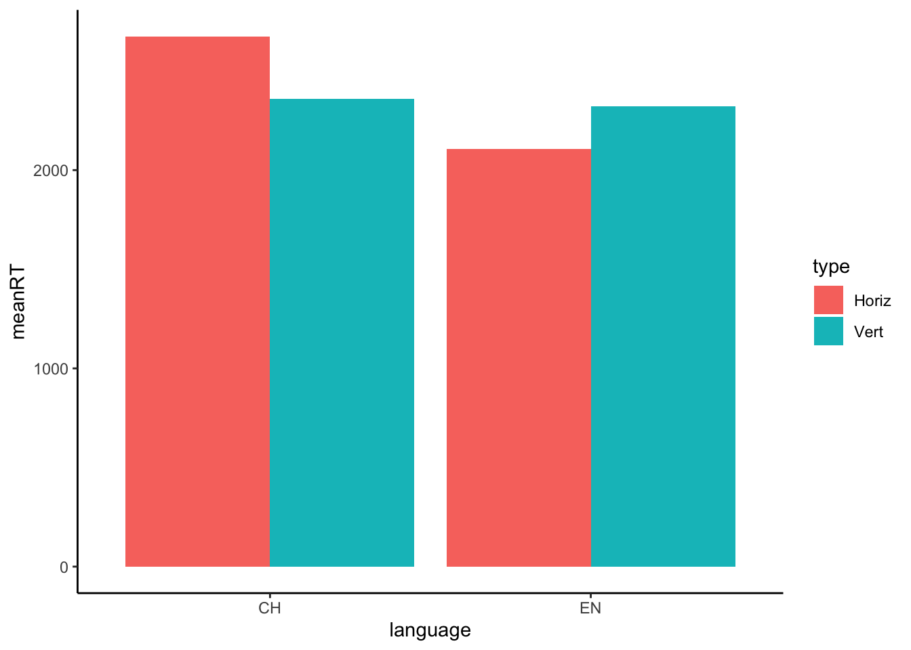

tidyverse functionsIn our previous simulations of data we have been creating data by pasting together columns and rows from separate vectors. This is not a very ideal method because it requires data to be aligned before joining. The goal of this activity is to see how we can do this using some more advanced data wrangling features in tidyverse
First let’s consider the difference between long data and wide data. Wide data is where each row contains all the observations for a particular subject. Long data is where each row is an individual observation per subject. What is the difference?
library(tidyverse)Wide Data - each row contains three observations per subjects
## # A tibble: 10 × 4
## subject pre post1 post2
## <int> <dbl> <dbl> <dbl>
## 1 1 23.9 50.5 39.9
## 2 2 24.4 51.5 39.9
## 3 3 24.1 48.4 39.3
## 4 4 24.0 49.1 39.8
## 5 5 23.8 48.6 40.2
## 6 6 24.3 50.5 40.4
## 7 7 23.5 47.7 41.1
## 8 8 25.2 50.5 41.0
## 9 9 23.8 49.8 39.9
## 10 10 24.4 53.5 41.4Long data - each row containts one observation per subject (for the first three participants)
## # A tibble: 9 × 3
## subject test score
## <dbl> <chr> <dbl>
## 1 1 pre 3.78
## 2 1 post1 57.8
## 3 1 post2 73.3
## 4 2 pre 24.9
## 5 2 post1 30.1
## 6 2 post2 73.3
## 7 3 pre 90.7
## 8 3 post1 21.0
## 9 3 post2 35.8Long data is typically the format you will want, but not always. Fortunately there is a method to swap back and forth between the two formats.
pivot_longer() and pivot_wider() are two methods to swap between these formats. They turn wide data to long, or long data to wide.
Let’s try to turn the object wide into long format using pivot_longer()
There are four crucial arguments:
data (the data object you are changing)cols (the columns you want to manipulate)names_to (the new name for the single column created by joining the columns named by cols)values_to (the new name for the column which includes the values from the columns named in cols)It is a bit confusing to wrap your head around at first. Basically, you are telling R to combine some number of columns into a single column.
Let’s practice.
emotions with four columns and three rows.subject with the values 1, 2, 3first with the values “happy”, “sad” “happy”second with the values “sad”, “happy”, “happy”third with the values “sad” , “sad”, “sad”emotions <- tibble(subject = c(1,2,3),
first = c('happy', 'sad', 'happy'),
second = c('sad', 'happy', 'happy'),
third = c('sad', 'sad', 'sad'))Your emotion tibble should look like this:
## # A tibble: 3 × 4
## subject first second third
## <dbl> <chr> <chr> <chr>
## 1 1 happy sad sad
## 2 2 sad happy sad
## 3 3 happy happy sademotions to long format using pivot_longer()subject, sequence, and emotionssequence will contain the values first, second, or thirdemotions will contain the values happy or sadHow to do this?
emotions_long from emotions.pivot_longer to combine the columns named first, second, and third into a single column.cols wrapped within c().
values_to and names_toemotions_long <- emotions %>%
pivot_longer(cols = c(first, second, third), values_to = "emotion", names_to = "sequence")If successful, your data should look like this
## # A tibble: 9 × 3
## subject sequence emotion
## <dbl> <chr> <chr>
## 1 1 first happy
## 2 1 second sad
## 3 1 third sad
## 4 2 first sad
## 5 2 second happy
## 6 2 third sad
## 7 3 first happy
## 8 3 second happy
## 9 3 third sadpivot_wider()This function is similar to pivot_longer except now are going in the reverse direction - we want to take a single column and break it up into new columns. The crucial arguments are:
names_from (where to get the names of the new columns from?)
values_from (where to get the for the new columns from?)
Create a new tibble named emotions_wide from emotions_long
Using a single pipe, transform the data into wide using pivot_wider
You only need to use the two arguments listed above. Which column should be passed to which argument to get the correct output?
emotions_wide <- emotions_long %>%
pivot_wider(names_from = sequence,
values_from = emotion)Let’s move on to something more challenging. Load in some data from Stephen’s website using the following line:
space_data <- read_csv('https://stephenskalicky.com/r_data/boroditsky_long.csv')The data are measurements of reaction times to two different prompt types: horizontal and vertical primes for ten trials per subject. Unfortunately the data is not in great shape: there is one row for all the horizontals and one row for all the verticals, with one column for each trial (1:10). Because half of the trials were horizontal and half were vertical, half of the data has an NA value.
Your mission, should you choose to accept it, is to clean the data so that it is in long version!
How do to it
clean_space from the space_datapivot_longer() to create the new rt and order columnspivot_longer() function, you need to supply values for cols, values_to, and names_to# solution 1
clean_space <- space_data %>%
pivot_longer(cols = c('one', 'two', 'three', 'four', 'five', 'six', 'seven', 'eight', 'nine', 'ten'), values_to = 'rt', names_to = 'order')
# solution 2
clean_space <- space_data %>%
pivot_longer(cols = c(colnames(space_data[4:13])), values_to = 'rt', names_to = 'order')
# solution 3
my.names <- colnames(space_data[4:13])
clean_space <- space_data %>%
pivot_longer(cols = my.names, values_to = 'rt', names_to = 'order')## Note: Using an external vector in selections is ambiguous.
## ℹ Use `all_of(my.names)` instead of `my.names` to silence this message.
## ℹ See <https://tidyselect.r-lib.org/reference/faq-external-vector.html>.
## This message is displayed once per session.You should see something like this:
head(clean_space, n = 10)Congrats? There is still a bit of a problem with this data because we have these ugly NA values - ew! There a couple of methods for getting rid of NA, but let’s use some tidyverse solutions.
We could use the drop_na() function from dplyr which does exactly what it says - removes any row with a NA value in it
drop_na(clean_space)But it is probably smarter to use the additional argument provided by pivot_longer() which allows you to drop NA values - create clean_space again but pass values_drop_na = T as an additional argument to your pivot_longer() function.
# solution using colnames
clean_space <- space_data %>%
pivot_longer(cols = c(colnames(space_data[4:13])), values_to = 'rt', names_to = 'order', values_drop_na = T)You should see this:
head(clean_space, n = 10)Please provide a summary of RT in each condition. Create a new tibble named space_summary which provides the mean, min, max, and sd for RT in the horizontal and vertical conditions for both languages.
Your output should be a tibble with 4 rows and 6 columns.
space_summary <- clean_space %>%
group_by(language, type) %>%
summarise(meanRT = mean(rt), sdRT = sd(rt), minRT = min(rt), maxRT = max(rt))It should look like this:
space_summaryWhat claims might we make about this data? 